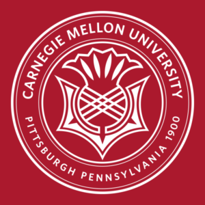
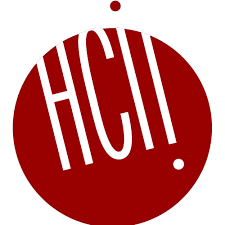

About me.
I'm a product manager with a technical education & a passion for design.
Hello! I studied information systems, human-computer
interaction, and computer science at Carnegie Mellon University. I have experience
in interaction design and application development.
My passions for creative writing, poetry, art, debate, philosophy,
and human systems combined with my exploration of AI applications, machine learning, and more during college led
me to become a product manager– where I could harness technology and my need to understand others to create something great.
Previously, I was an Associate Product Manager intern at Atlassian (2023) and a Product Manager intern at HP (2022),
as well as the UX Design Lead at CMU CS Academy (2021). At CMU, I served as the Head of Product Management Academy as part of
CMU Business Technology Group (BTG). In this role, I organized CMU's first ever Product Management Hackathon in partnership with Microsoft,
BTG's first-ever career treks to the Pittsburgh offices of Duolingo and Google, built out BTG's first PM alumni network, and taught product
management skills to CMU undergraduates.
Education
Fall 2020 - Spring 2024

B.S. Information Systems
Carnegie Mellon University
Activities:
- Business Technology Group (Head of Product Management Academy, Product Management Hackathon Founder / Lead Organizer)
- Delta Delta Delta sorority (Conduct Committee, Co-Social Chair)
- Sigma Phi Epsilon buggy racing (Co-Chairman, Head Driver)
- CMU Debate (Treasurer)
Work Experience
Jan 2024 - May 2024

Teaching Assistant
Carnegie Mellon University
Design for AI Products and Services
May 2023 - Aug 2023
Associate Product Manager Intern
Atlassian
I worked on solutions for shadow IT in the enterprise admin experience team.
May 2022 - May 2023

Product Manager Intern
HP
I worked on solutions for onboarding IT admins to Cloud Endpoint Manager.
Jan 2022 - May 2023
Head Teaching Assistant
Carnegie Mellon University
(67-250 Information Systems Milieux) I trained 25 TAs to support 140 students: Led team-wide meetings on course improvements, grading consistency, etc.
I coordinated and taught student sessions for web development (HTML/CSS/JavaScript), database design (SQL), and business analysis.
Jan 2021 - Nov 2021
UX Design Lead, UX Designer
CMU CS Academy
I doubled team productivity (# of completed features) by collaborating with Program Manager to set deadlines and increase accountability.
I designed & documented features for handoff to Dev (file storage platform, custom course builder, exercise creation interfaces for teachers).
I prioritized backlog tasks given time and headcount constraints.